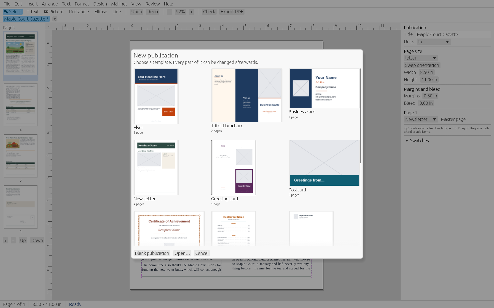

01
Start from a template
Thirteen built-in templates: flyer, trifold brochure, business card, a four-page newsletter, greeting card, postcard, certificate, menu, letterhead, #10 envelope, a 12-month calendar, address labels and a business card sheet.
Every template uses a colour scheme, so one click recolours the whole thing.

